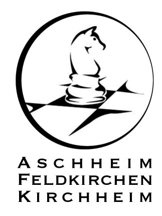

Korbinian Ruffverifiziert
- DWZ
- 1783
- ELO
- 1721
- Bilanz
- 9 / 23 (39 %) seit 2022/23
- Partien
- Heim 12 · Auswärts 11
- Berichte
- 3 geschrieben
- Geburtstag
- 4. März 2002

AFK on Tour
Platz 1 von 1 · 205 Punkte6Orte
2Länder
8Turniere
496 kmweiteste Reise
EntdeckerPionierFremdenführerGrenke-PilgerErste Reise + 7 weitere
Gespielte Partien
Saison 2026/27 2 / 2
AFK 2 A-Klasse
| Rd | Ort | Brt | Gegner | DWZ | Mannschaft | Erg. |
|---|---|---|---|---|---|---|
| 1 | Heim | 5 | Andres Gonzales Nunez | 1922 | FC Bayern München 6 | 1 |
| 2 | Gast | 6 | Gergely Gyopár | 1931 | TSV Solln 1 | 1 |
| Summe 2 / 2 | ||||||
Saison 2025/26 2½ / 5
AFK 1 Bezirksliga
| Rd | Ort | Brt | Gegner | DWZ | Mannschaft | Erg. |
|---|---|---|---|---|---|---|
| 2 | Heim | 8 | Otto Windl | 1715 | TSV Solln 1 | ½ |
| Summe ½ / 1 | ||||||
AFK 2 B-Klasse 1
| Rd | Ort | Brt | Gegner | DWZ | Mannschaft | Erg. |
|---|---|---|---|---|---|---|
| 1 | Heim | 6 | Srinivas Kallepalli | 1345 | SK Markt Schwaben 1 | ½ |
| 6 | Gast | 7 | Tobias Stempfle | 1686 | SC Garching 1980 6 | ½ |
| Summe 1 / 2 | ||||||
AFK 3 C-Klasse 2
| Rd | Ort | Brt | Gegner | DWZ | Mannschaft | Erg. |
|---|---|---|---|---|---|---|
| 3 | Heim | 1 | Jonathan Ucksche | 1739 | SK Tarrasch 1945 München 5 | ½ |
| 4 | Gast | 1 | Georg Darius Kempa | 1476 | FC Bayern München 9 | ½ |
| Summe 1 / 2 | ||||||
Saison 2024/25 1 / 4
AFK 1 Bezirksliga
| Rd | Ort | Brt | Gegner | DWZ | Mannschaft | Erg. |
|---|---|---|---|---|---|---|
| 1 | Gast | 8 | Raul Fernandez-Alvarez | 1838 | SG Schwabing München Nord 1 | 0 |
| 3 | Gast | 8 | Valentin Meltser | 1646 | Schach-Union München 1 | ½ |
| 8 | Heim | 8 | Thomas Lengfeld | 1877 | FC Bayern München 5 | 0 |
| 9 | Heim | 8 | Wolfgang Wesely | 1763 | SC Roter Turm Altstadt 1 | ½ |
| Summe 1 / 4 | ||||||
Saison 2023/24 3 / 6
AFK 1 Bezirksliga
| Rd | Ort | Brt | Gegner | DWZ | Mannschaft | Erg. |
|---|---|---|---|---|---|---|
| 2 | Gast | 8 | Christian Siebenwirth | 1913 | SG Schwabing München Nord 1 | 0 |
| 3 | Gast | 8 | Hans Neidl | 1694 | SC Garching 1980 4 | 1 |
| 4 | Heim | 6 | Matthias Rispler | 1960 | SF Deisenhofen 1 | 0 |
| 6 | Heim | 8 | Sebastian Woitinas | 1635 | Schach-Union München 1 | 1 |
| 7 | Gast | 8 | Ossi Weiner | 2135 | FC Bayern München 5 | ½ |
| 9 | Gast | 8 | Klaus Eisfeld | 1778 | SC Roter Turm Altstadt 2 | ½ |
| Summe 3 / 6 | ||||||
Saison 2022/23 ½ / 6
AFK 1 Bezirksliga
| Rd | Ort | Brt | Gegner | DWZ | Mannschaft | Erg. |
|---|---|---|---|---|---|---|
| 2 | Heim | 8 | Michael Unger | 2126 | Münchener SC 1836 3 | 0 |
| 4 | Heim | 8 | Raul Fernandez-Alvarez | 1743 | SG Schwabing München Nord 1 | 0 |
| 5 | Heim | 7 | Artur Schelle | 2133 | SK Tarrasch 1945 München 2 | 0 |
| 6 | Gast | 6 | Juri Gendler | 1859 | SK München Südost 2 | 0 |
| 8 | Gast | 7 | Lucas Niewerth | 1909 | SC Garching 1980 4 | ½ |
| 9 | Heim | 7 | Pablo Wolf | 1935 | SC Roter Turm Altstadt 2 | 0 |
| Summe ½ / 6 | ||||||
Inoffizielle DWZ-Prognose (aktuelle Saison)
| DWZ jetzt | W | We | E | Niveau | Leistung | DWZ neu | ± |
|---|---|---|---|---|---|---|---|
| 1783 | 2 / 2 | 0,61 | 20 | 1926 | – | 1833 | +50 |
Gerechnet mit der aktuellen DWZ, nur gespielte Partien gegen Gegner mit DWZ. Offiziell ausgewertet wird die Saison erst am Ende.
Geschriebene Berichte 3
- Testbericht: Partie zum Nachspielen 21.11.2026
- Ronny die Maske 21.11.2026
- Beispiel: Mannschaftskampf mit 8 Partien 21.11.2026
In den Berichten
- Kooperationsturnier GyKi feat. SG AFK 2026 13.10.2026
- Herbstblitz 2026 29.09.2026
- Duke Blitz - Runde 2 22.09.2026
- OIS 2026 - Dominik gewinnt C-Turnier! 18.09.2026
- Oberlandquartett 2026: 5. Sieg in Folge! 06.07.2026
- Eine Superwoche für die Annalen... 08.12.2024
- Neues von den Mannschaftsmeisterschaften 21.11.2024
- MMM 2025: Ein perfekter Start 13.10.2024
- Schnellschach Vereinsmeisterschaft 2024 29.09.2024
- Mannschaftssaison 2023/24 03.06.2024
- Sieg beim Oberlandquartett 2022 05.10.2022
- Feffernitz-Open: Tradition ist eine Laterne... 05.10.2022
… und 14 weitere anzeigen
- Jugend goes Innsbruck Open 27.09.2021
- Korbinian gewinnt Gruppe 1 17.04.2021
- Deutsche Lehrermeisterschaft 2021 13.04.2021
- 1. SG AFK Online-Blitzserie 2020 03.04.2020
- David MEHLHORN verteidigt den Vereinsjugend-Pokal // Finale des Vereins-Pokals am 29. November 08.11.2019
- Erfolgreiche Saison für alle Mannschaften 10.05.2019
- Weihnachts-Blitzschach-Turnier 2018 - Sieger : Rudolf OSTER 31.12.2018
- Vereins-Jugend-Pokal 2018 01.09.2018
- Vereins-Pokal 2018 : Sieger Pierre Tassell 06.07.2018
- Vereinsturnier - Hauptgruppe - Endstand 31.12.2017
- 2. Mannschaft erreicht in den Münchner Mannschafts-Meisterschaften in der D-Klasse einen 3. Platz 26.10.2016
- Vereinsturnier 2016 - Ergebnisse 4. Runde / Spielpaarungen 5. Runde 21.10.2016
- Blitzschach-Meisterschaft 2016 26.08.2016
- Weihnachtsblitzturnier 2015 18.12.2015